Final Projects!
Jeffrey Zhang
CS194-26 | Professor A. Efros
Project 1: Gradient-Domain Fusion
Overview
In this project, I will stitch and blend images together seamlessly using gradients and least squares optimizations. This project is based on Perez et al.'s 2003 paper on poisson and mixed-gradient blending.
Toy Problem
To give an introduction into using gradients to reconstruct and manipulate images, I will first begin with a toy problem by reconstructing an image using one pixel value and its gradients. Finding the gradients of an image in the x and y direction will give me the exact differences between each pixel and its neighbors. Thus, storing all these gradients, I can use one pixel to find the correct pixel intensities for all remaining pixel values!
We will minimize the differences in the gradients between the resulting image and the original image by running least squares on the two values. We will set up a least square matrix to solve the pixels in our resulting image. Each pixel will have 2 rows in our matrix that represent minimizing the difference between its gradients in the x and y direction. Finally, we use python's least squared solver to solve for our desired image. Below demonstrates that our solved image is identical to the original image!
| Original (left) vs Solved Image (right) |
|---|
| 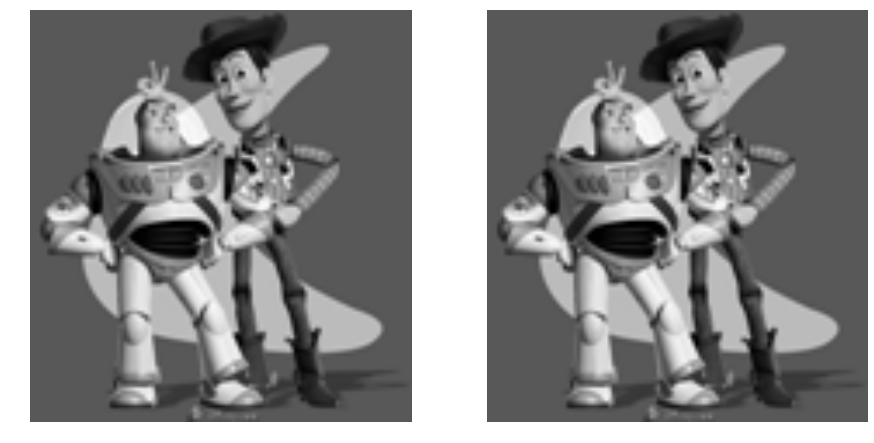 |
Poisson Blending
Poisson blending is a technique that allows me to seamlessly blend a patch of an image into a background image. The technique looks to minimize the differences in the gradients in the original image with the resulting image as well as minimize the gradients of the resulting image with its gradients with the neighboring pixels. The least squares equation we wish to solve is:

The problem is as follows: given the pixel intensities of the source image "s" and of the target image "t", we want to solve for new intensity values "v" within the source region "S". Let N_i be the set of 4 neighboring pixels (left, right, above, below) to i in S. Again, using python's least squares solver, we can solve for the pixels in our new image! Additionally, I used scipy's sparse matricies and functions to drastically speed up computation as well as reduce the amount of memory it takes to store my matrices for the least squares calculation.
Poisson Image Example
The following images show the effect of the poisson blend. This cliff jumper somehow missed the gigantic alligator swimming in the lake below him.
| Source Image | Background Image |
|---|---|
| 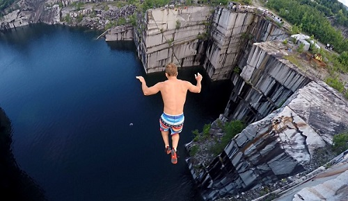 |
| Unblended Image | Poisson Blended Image |
|---|---|
| 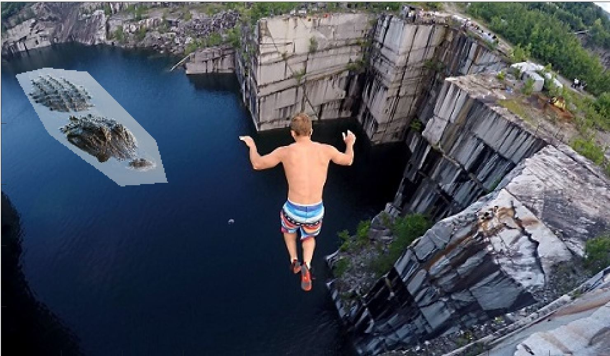 | 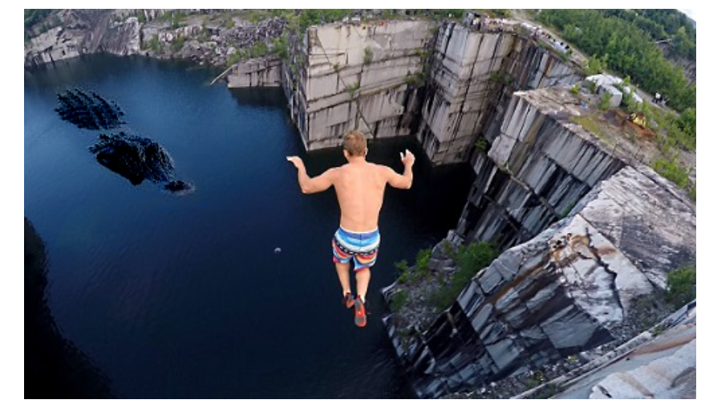 |
Other Examples
| Unblended Image | Poisson Blended Image |
|---|---|
| 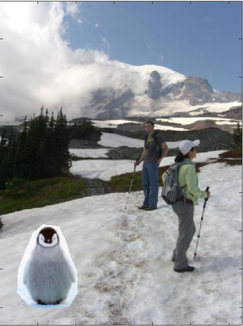 | 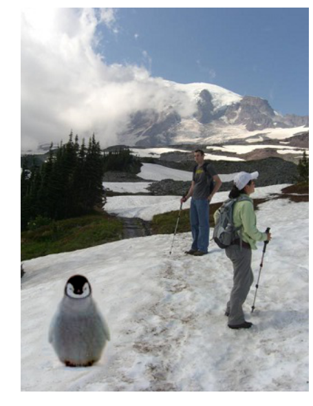 |
| Unblended Image | Poisson Blended Image |
|---|---|
| 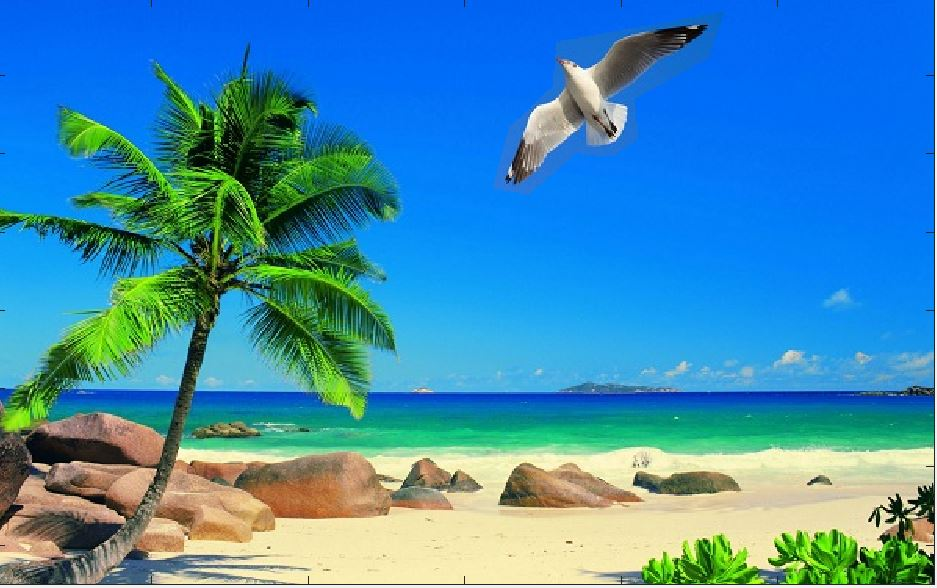 |  |
| Unblended Image | Poisson Blended Image | |
|---|---|---|
| 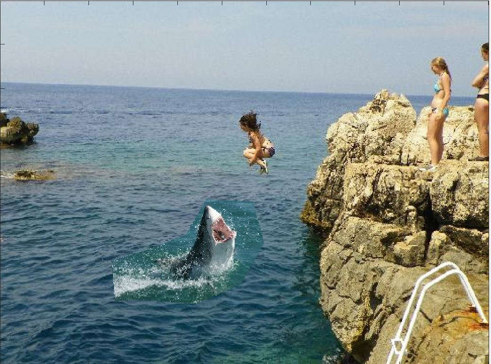 |  |
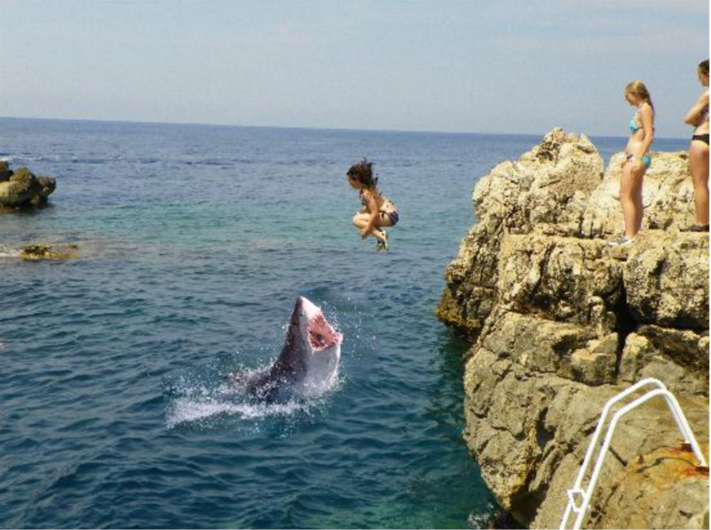 |
Failures
This poisson blending technique works best when the entire object is cropped out and when the target background has a smooth or similar texture to the source image you are trying to stitch onto it. For instance, when I blend the hiker onto the snow, there is an obvious discontinuinty in texture between the complicated background of the hiker and the smooth white snow. Furthermore, the fact that her body is cut off adds to the abnormalities.
The next example actually blends the images very seamlessly, however, the large difference in background color between the two images causes the seagulls to turn blue.
| Unblended Image | Poisson Blended Image |
|---|---|
| 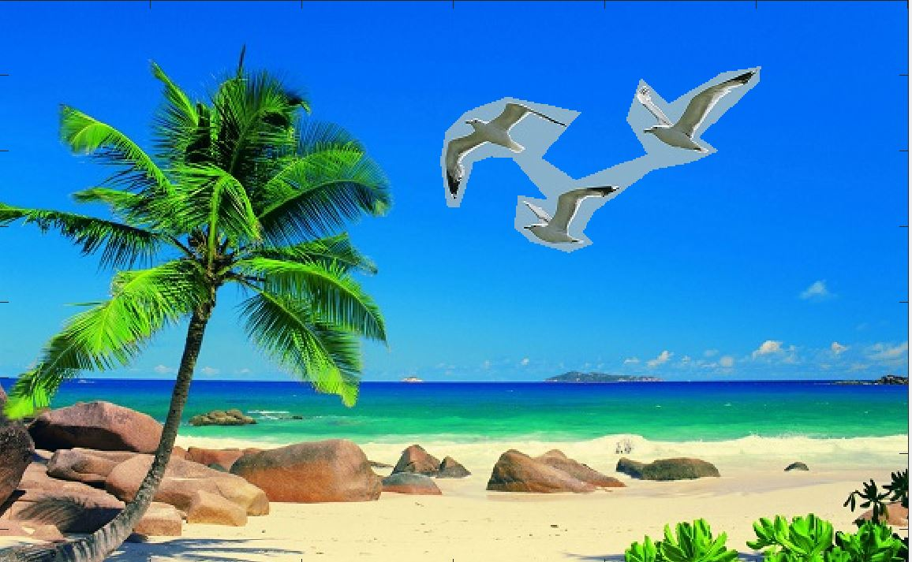 | 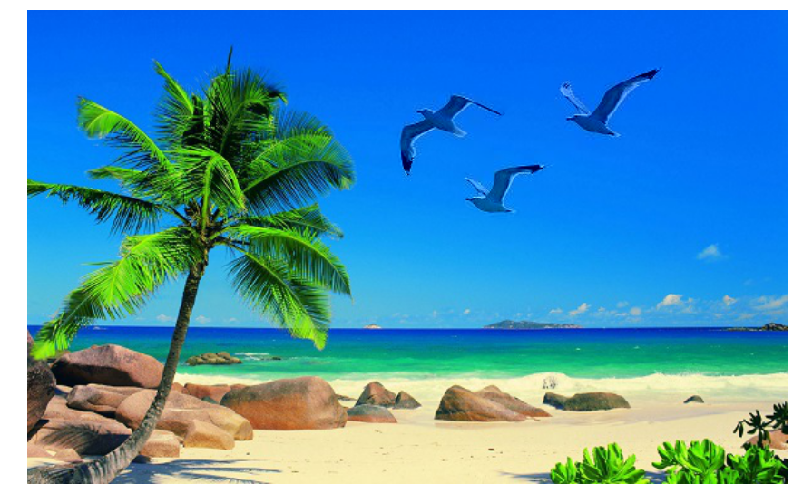 |
Mixed Gradients
Rather than blending the cut of a source image into a background image seamlessly, we want to instead maintain the integrity of the stronger gradient between the source and the background image. This effect allows us to keep the most information from both source and background images. Here we want to change the second term from our poisson blending equation to get:

Here d_ij is the gradient from the source or the target image with larger magnitude.
Mixed Gradient Example
The following images show the effect of the mixed gradient blending. The word "words" is pasted onto a brick wall emulating either paint or spray paint.
| Source Image | Background Image |
|---|---|
| 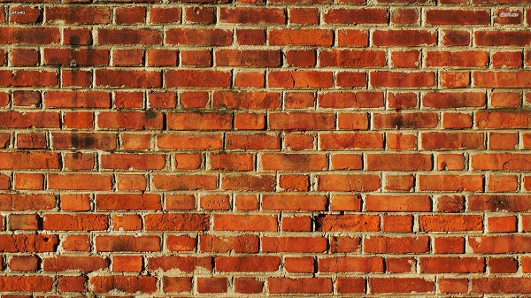 |
| Direct Overlap | Mixed Gradient Image |
|---|---|
| 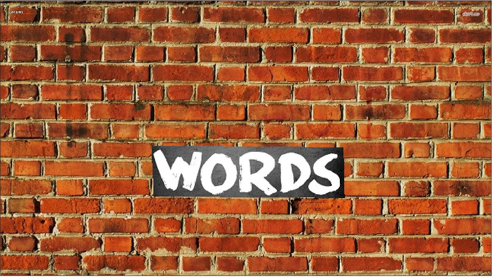 | 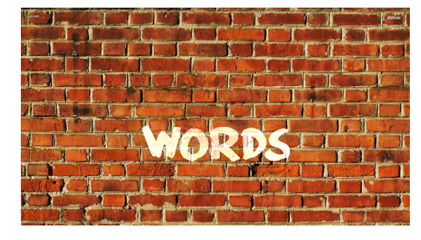 |
Comparison to Poisson Blending
You can see that mixed gradient mixing works much better maintaining the integrity of the content as well as the background of the original background image by choosing to minimize the differences in the larger gradients.
| Poisson Blended Image | Mixed Gradient Image |
|---|---|
| 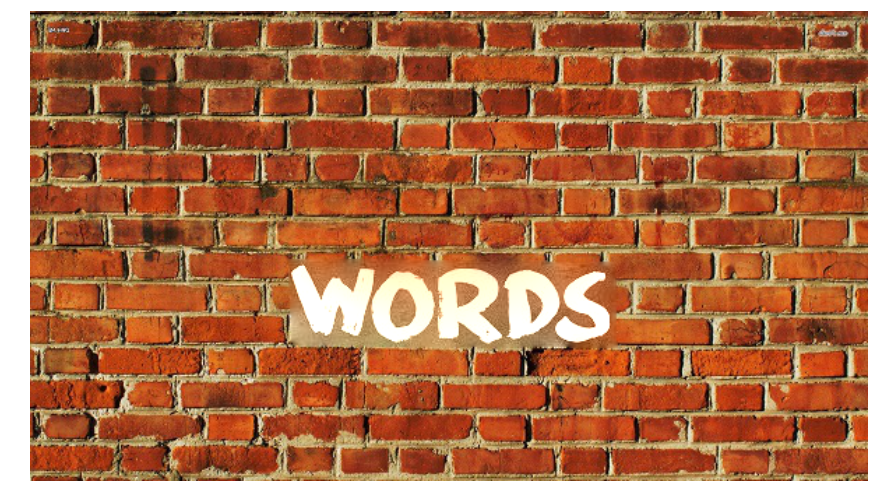 |
Bells and Whistles - Color2Gray
The standard conversion from rgb to gray uses the direct intensities of each color channel in the following equation: gray = 0.2989*red + 0.5870*green + 0.1140*blue. Thus, using only intensities for the conversion might lose information like the following example:
| Original Image | Python's RGB2Gray |
|---|---|
 |
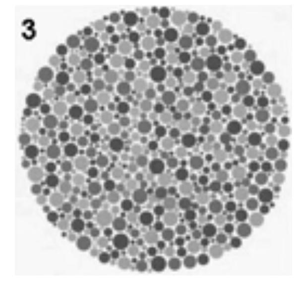 |
When we convert the RGB to HSV, notice that the S channel (saturation), defines the contrast very clearly.
Thus, we can use the S channel as our source image to capture the "35" and python's gray image as the background for the background gray conversion. Running the code for mixed gradient on these two images as our source and background, we get a color2gray conversion that maintains the contrast information!
Project 2: Image Quilting
Overview
In this project, I will create larger images by quilting patterns from a source image. The idea of the project is taken from this 2001 paper by Efros and Freeman.
Algorithm Comparisons
The first method is to randomly sample patches from the texture I want to replicate. This method is the easiest and quickest but returns the worst results as shown below. The randomly selected patches are not seamlessly put together.
The second method is to minimize the difference in overlap between patches already placed down. The algorithm begins by choosing the top left patch randomly and using that set patch, we can minimize the differences between the remaining patches to be set.
The final method combineds overlapping patches with a seam finding algorithm. This finds the best cut between the two overlapping patches that creates the smoothest transition from one patch to the next. You can see in the comparisons below that this method creates the most convincing texture quilting result.
Original Image
.jpg)
| Randomly Sampled Textures | Overlapping Patches | Overlapping Patches + Seam Finding |
|---|---|---|
| 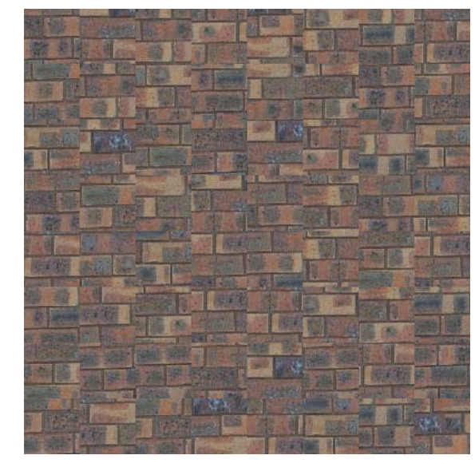 | 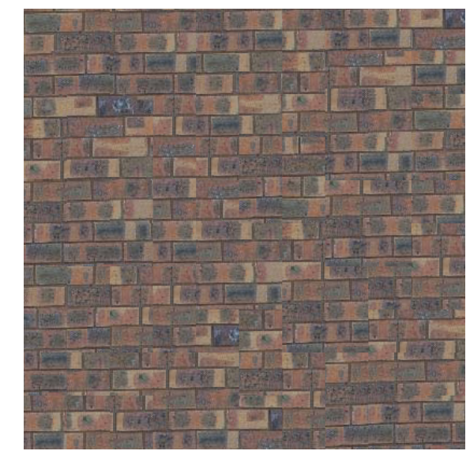 | 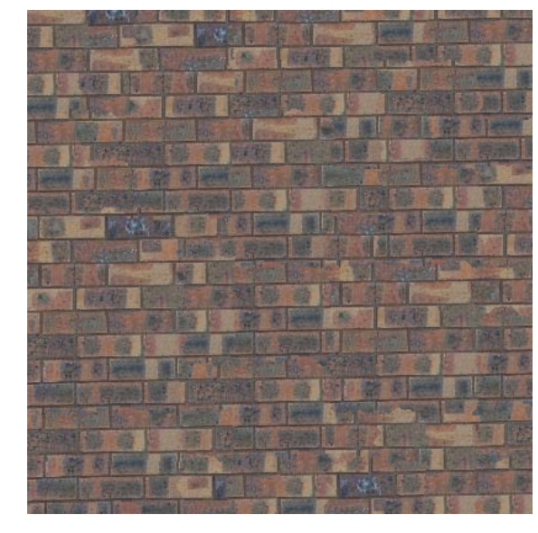 |
Implementation of Algorithms
Random Patches
This is the simplest method to implement and requires randomly sampling patches from the texture image I want to quilt together and stitching them together.
Overlapping Patches
To implement overlapping patches, we begin by randomly sampling a texture patch for the top left corner. We now want to build off that patch by minimizing the sum of squared differences between that patch's overlap with its adjacent patches (the amount of overlap is manually set). To find the patch that works best with the patches we already have, we run the SSD of the overlap region across all possible patches in the texture image and find the patch that has the lowest SSD.
There will be two overlapping regions for patches not on the sides of the image we are creating. Thus, we must find the patch that fits best with both those overlapping regions by adding the SSD we get for each.
Seam Finding
The final method combines overlapping patches with seam finding. When compiling patches together, we need to define a way to determine which pixels to use between the two patches in the overlapping regions. One way to determine this cut is by finding a seam down the overlapping region that contains the last amount of information (energy). Energy is defined as the gradient of a pixel in the x and y directions (high frequency regions will have higher energy). An example of such a cut is shown below.
| Left patch | Right patch |
|---|---|
| 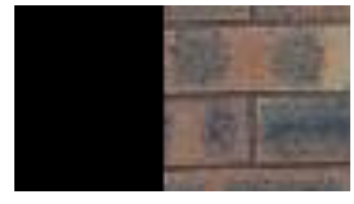 | 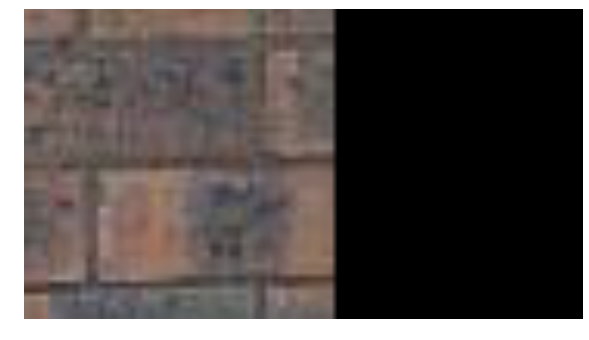 |
| Seam | Combined |
| 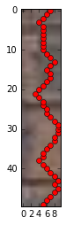 | 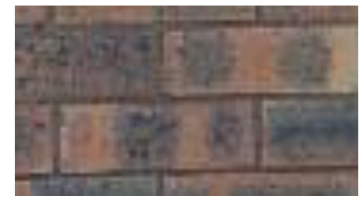 |
Difficulties
My largest difficulty by far was trying to run SSD efficiently. My code originally had nested for loops interating through all possible patch locations in the texture, which is not efficient. I tried numerous different methods to speed up my code including vectorizing code using numpy and using scipy's correlate function to solve ssd = correlate(image^2, mask) - 2*correlate(image, patch) + np.sum(patch^2). In the end, none of my tweaks came close to the speed of cv2's SSD feature matching. My code includes my personal feature matching function, which returns identical results to cv2's function, but runs exponentially slower (texture synthesis on feynman took around 10 minutes with my function, but takes ~20-30 seconds using cv2's function).
Quilting Texture Synthesis Results
| Source Image | Quilted Image |
|---|---|
 |
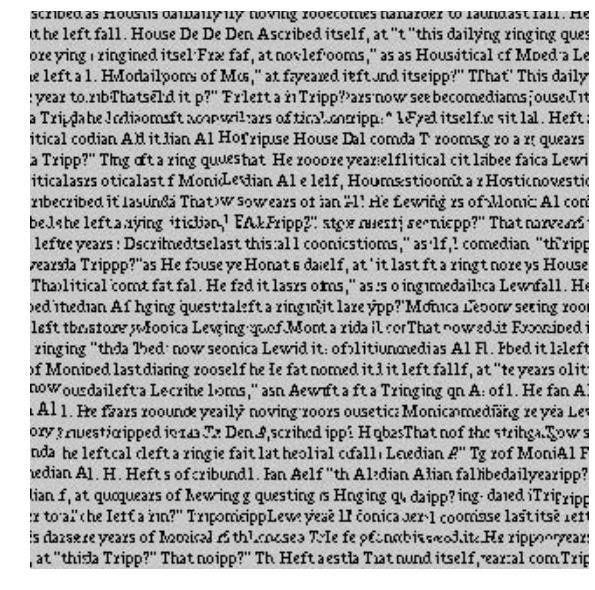 |
| Source Image | Quilted Image |
|---|---|
 |
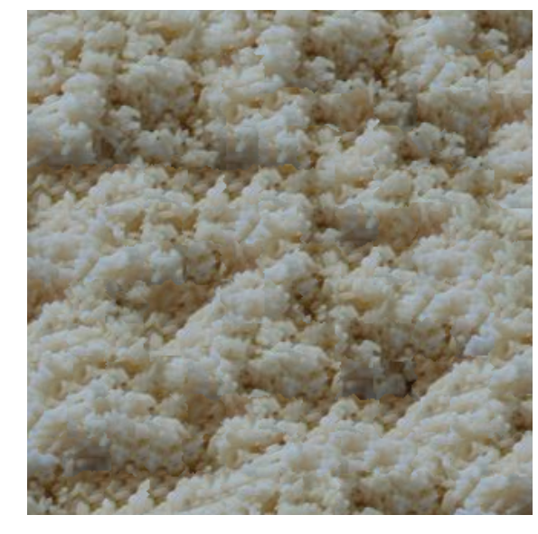 |
| Source Image | Quilted Image |
|---|---|
| 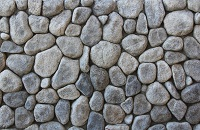 | 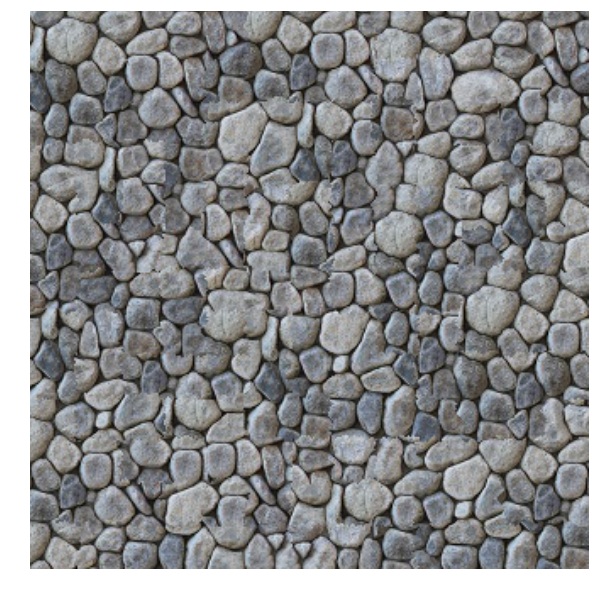 |
| Source Image | Quilted Image |
|---|---|
| 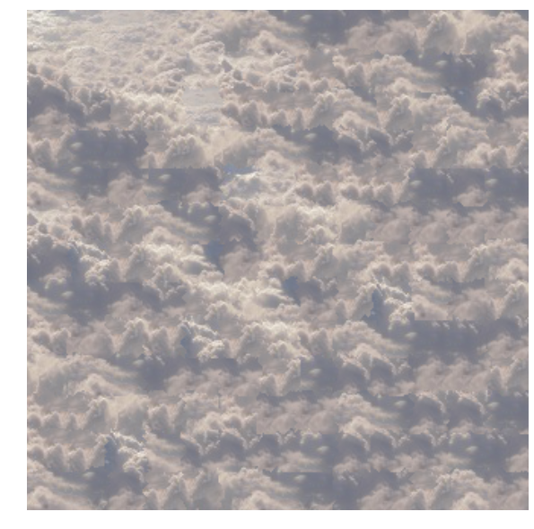 |
| Source Image | Quilted Image |
|---|---|
|
Most of the image quilting results look quite good, but obviously still show some flaws. The image quilting of the text could pass off as text from another language, but unfortunately no longer looks like English. The yogurt and the brick results probably look the best because there is more randomness in the textures, which allows for greater room for error while still looking good. There are some seams in the rocks, but only are noticeable upon closer inspection. Finally, the clouds seem to be repeat a similar pattern, which makes it look less natural, but still looks decent nonetheless.
Texture Transfer
The idea of texture transfer is to use patches from a texture to best recreate another image. The implementation of texture transfer requires finding the texture that has the smallest SSD with the pixel intensities of the original image. Additionally, we want the patches to be seamless and we also want to minimize the SSD with overlapping patches. How seamless and how accurate the texture represents the original image pixels need to be traded off when determining the patch that has the lowest SSD. We can do this simply by setting the error for each patch as alpha * SSD(overlapping regions) + (1-alpha) * SSD(pixels of patch vs original image) and changing alpha to our liking.
Texture Transfer Examples
The following images show the effect of texture transfer. The image of Feynman is recreated using the textures of the sketch and the beautiful scenery is recreated with the textures from an oil painting.
| Texture Image | Original Image |
|---|---|
| 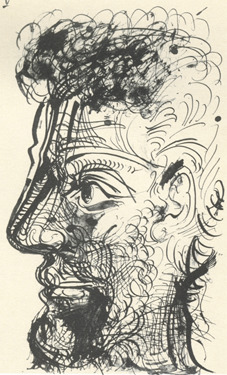 | 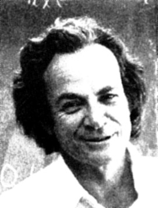 |
| Resulting Image (alpha set to 0.1) |
|---|
| 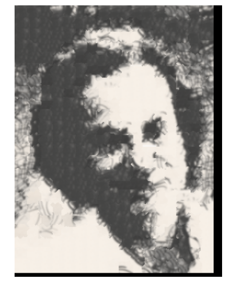 |
| Texture Image | Original Image |
|---|---|
 |
| Resulting Image (alpha set to 0.2) |
|---|
 |
Bells and Whistles - Personal Implementation of Seam Finding
Instead of using the provided cut.m files for seam finding, I made some modifications to my seam carving code from project 4 to work in this project as well. The algorithm suggested by Avidan and Shamir uses the energy values of each pixel to determine its importance to the image as a whole. One way of determining the energy for each pixel is by taking the sum of the absolute values of the pixel's gradient in the x and y directions. This derivative is found by convolving a [[-1,0,1],[-2,0,2],[-1,0,1]] matrix to the image for the x-direction, and a [[-1,-2,-1],[0,0,0],[1,2,1]] matrix for the y-direction. This effectively gives more weight towards pixels that are stronger edges. Because edges often define important features of an image, removing pixels that are not edges are less likely to affect the defining contents of an image. For color images, the energy for each pixel is determined by its gradient in its grayscale image.
To find the seam, we want to find a path from the top of the region to the bottom where the total energy of that path is minimized. This can be done very efficiently with dynamic programming. Initializing the energy weights for the top pixels, we can iterate through every pixel and use the above 3 pixels (or 2 if the pixel is on a border) to determine which path has the lowest total energy.

Once we have assigned a value to every pixel, we simply take the pixel with the lowest value on the bottom row and that defines our smallest path. To retrieve other pixels in the path, take the minimum of the above 3 pixels.

Image courtesy of CS194-26 PPT slides